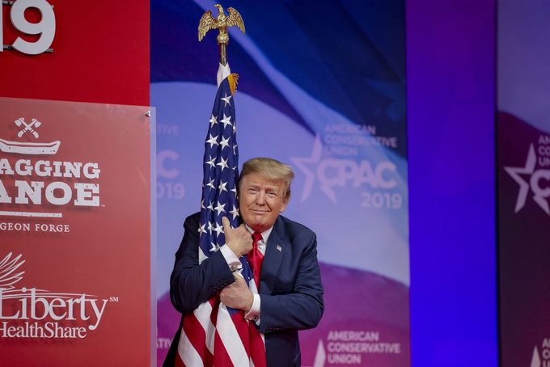

Are any Democrat operatives, the DNC, or Crooked Hillary Clinton, blaming Russia, Russia, Russia for the Bernie Sanders win in Nevada. If so I suggest calling Bob Mueller & the 13 Angry Democrats to do a new Mueller Report, Democrat Edition. Bob will get to the bottom of it!
Somebody please tell incompetent (thanks for my high poll numbers) & corrupt politician Adam “Shifty” Schiff to stop leaking Classified information or, even worse, made up information, to the Fake News Media. Someday he will be caught, & that will be a very unpleasant experience!
Look forward to being with all of my friends and supporters CPAC on Saturday, February 29th! KAG2020
“The Kremlin is reportedly backing Bernie Sanders bid to win the White House.” Jon Scott @FoxNews Why didn’t somebody tell me this?
Looks like Crazy Bernie is doing well in the Great State of Nevada. Biden & the rest look weak, & no way Mini Mike can restart his campaign after the worst debate performance in the history of Presidential Debates. Congratulations Bernie, & don’t let them take it away from you!
Democrats in the Great State of Nevada (Which, because of the Economy, Jobs, the Military & Vets, I will win in November), be careful of Russia, Russia, Russia. According to Corrupt politician Adam “Shifty” Schiff, they are pushing for Crazy Bernie Sanders to win. Vote!
“An investigation into NOTHING.” The wonderful @trish_regan on the Mueller Witch Hunt!